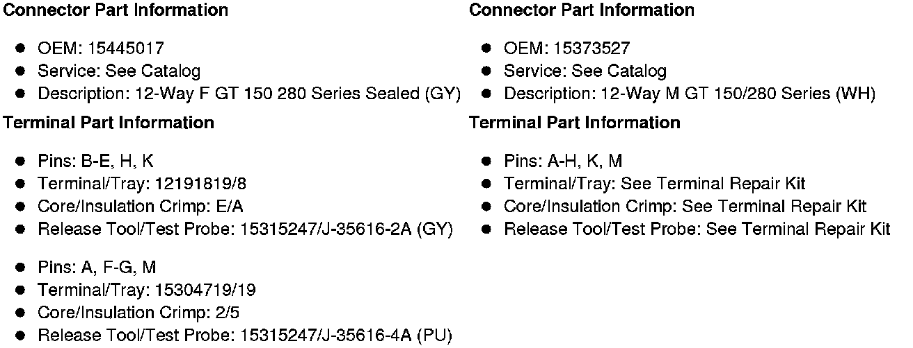
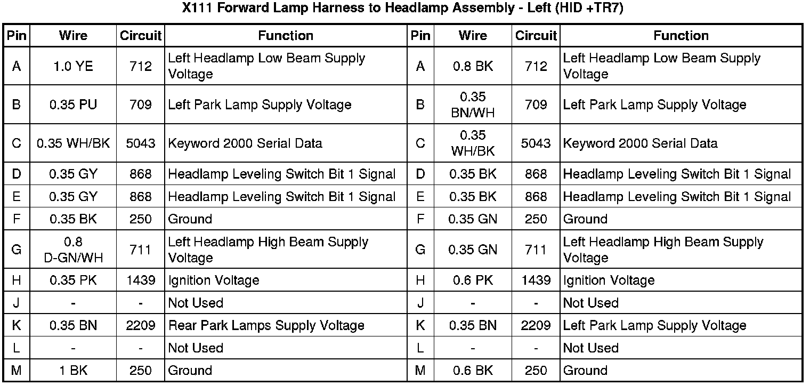
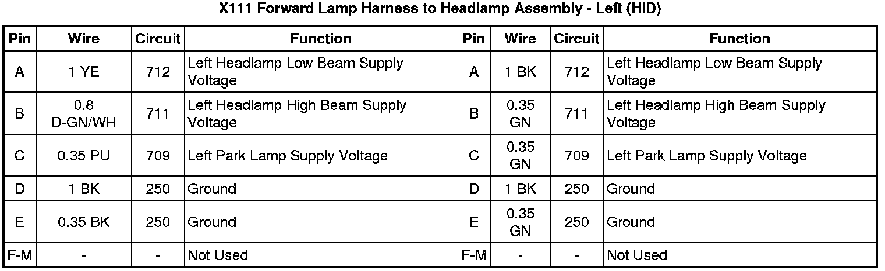
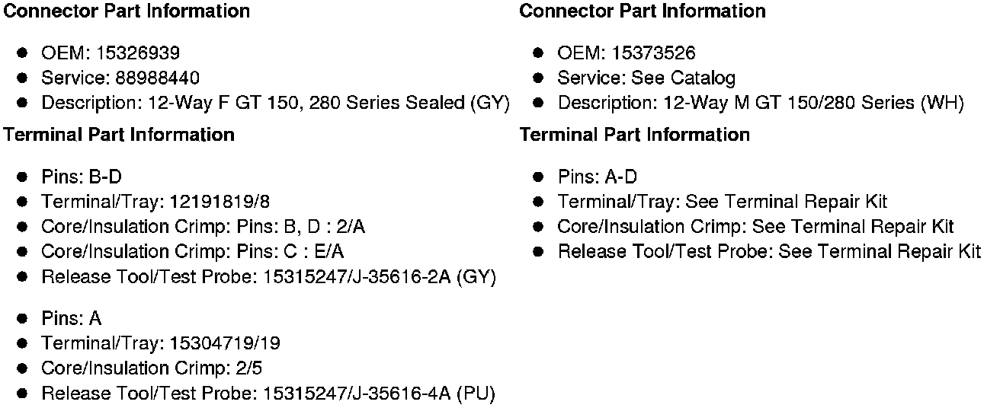
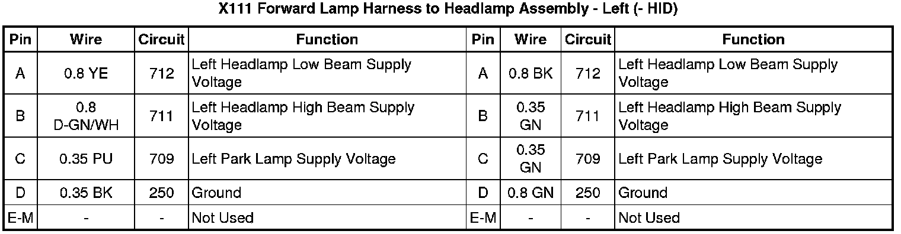

Operation CHARM
: Car repair manuals for everyone.
Home
>>
Cadillac
>>
2008
>>
SRX AWD V8-4.6L
>>
Repair and Diagnosis
>>
Diagrams
>>
Connector Views
>>
Connectors By Number
>>
X100 - X199
>>
X111
X111
Inline Harness Connector End Views
X111 Forward Lamp Harness to Headlamp Assembly - Left (HID +TR7)


X111 Forward Lamp Harness to Headlamp Assembly - Left (HID)

X111 Forward Lamp Harness to Headlamp Assembly - Left (- HID)

